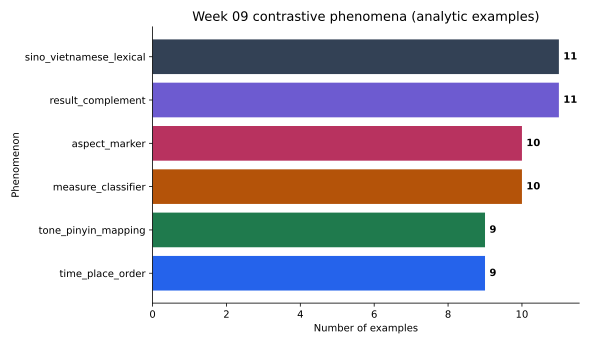
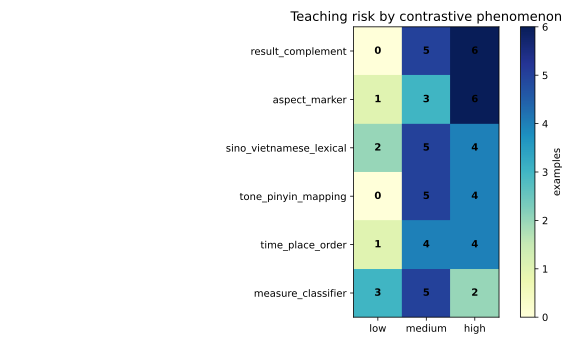

Tuần 09
Dữ liệu đối chiếu Hán-Việt
Từ example pair đến contrastive table, figure và analysis paragraph.
66raw rows
60usable examples
priority tableread output
Bridge
Week 08 đếm lỗi; Week 09 hỏi pattern nào cần giải thích
Ta không chứng minh transfer. Ta xây contrastive hypothesis có ví dụ và limitation.
Week 08error code
Hypothesispossible contrast
Week 09example bank
Paperanalysis note
Unit
Một row là một cặp ví dụ, không phải một learner
example_idChinese patternVietnamese renderingteaching note
C001我在学校学习汉语。Tôi học tiếng Trung ở trường.place phrase before verb
Caution
Đối chiếu không phải dịch từng chữ
Yếu: 了 = đãtoo direct
Tốt hơn: 了 có nhiều chức năng; đã/rồi tùy context.context first
Schema
Dataset cần pattern, risk và note
phenomenonresult_complement
teaching_riskhigh
evidence_noteaction vs result
Filter
Giữ ví dụ đủ context cho bảng chính
analysis_rows = df[df["include_in_table"] == True].copy()66raw rows
60included rows
6background rows
String
str.contains chỉ tìm pattern nhìn thấy được
analysis_rows["has_le"] = analysis_rows["chinese_example"].str.contains("了", regex=False)Nếu tìm 了, Python chỉ nói row có ký tự 了; người nghiên cứu vẫn phải đọc context.
Frequency
value_counts trả lời: hiện tượng nào có nhiều ví dụ?
phenomenonn%
result_complement1118.3
sino_vietnamese_lexical1118.3
measure_classifier1016.7
aspect_marker1016.7
Frequency giúp biết example bank đang nghiêng về đâu.
Risk
crosstab đọc teaching risk theo phenomenon
pd.crosstab(analysis_rows["phenomenon"], analysis_rows["teaching_risk"])High risk là ưu tiên dạy, không phải bằng chứng learner chắc chắn sai.
Example
Word order: place phrase trước verb trong Chinese
中文我在学校学习汉语。
Tiếng ViệtTôi học tiếng Trung ở trường.
Focus在学校 -> ở trường: Chinese places the location before the verb phrase.
Example
Classifier: Chinese thường cần measure word
中文两个学生
Tiếng Việthai học sinh
Focus个: Mandarin numeral-noun phrases normally need a classifier.
Example
Aspect: 了 không đơn giản là past tense
中文我吃饭了。
Tiếng ViệtTôi ăn cơm rồi.
Focus了 is context-sensitive; do not teach it as simple past tense.
Example
Result complement: action phải đạt result
中文我找到票了。
Tiếng ViệtTôi tìm thấy vé rồi.
Focus找到 contrasts action with achieved result: tìm thấy.
Lexis
Hán-Việt cognate có thể giúp và cũng có thể gây nhiễu
文化 -> văn hóatransparent
方便 -> thuận tiện, không phải phương tiệnfalse friend risk
Figure
Frequency figure cho phenomenon

Heatmap
Heatmap cho phenomenon by risk

Writing
Analysis = count + example + implication + limitation
Trong N = ___, ___ có priority score cao nhất.
Bài nộp
Submit contrastive analysis package
- completed notebook
- marker check + filter note
- 2 captions
- analysis paragraph 120-170 từ
- limitation statement
Next
Week 10 biến contrastive result thành teaching adaptation
Week 09 chọn pattern. Week 10 sẽ biến pattern thành hoạt động dạy học ngắn hạn.